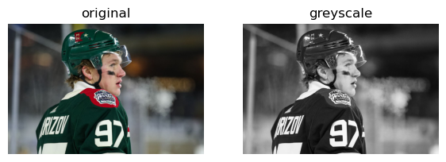
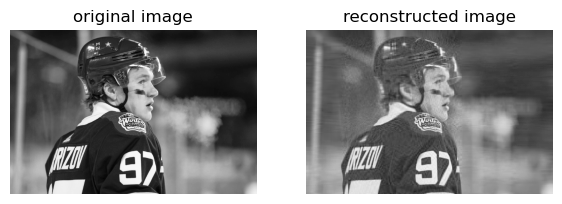
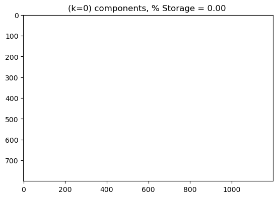
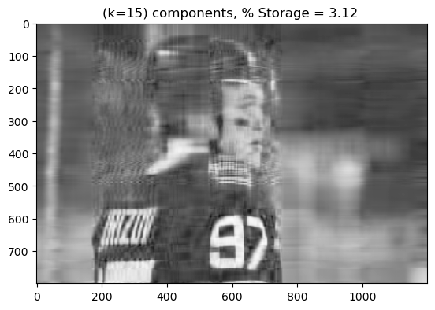
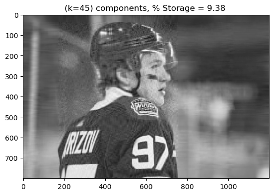
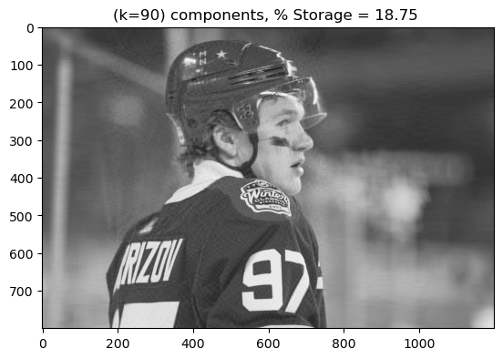

import PIL
import urllib
import numpy as np
from PIL import Image
def read_image(url):
return np.array(PIL.Image.open(urllib.request.urlopen(url)))Here is a link to my sorce code: https://github.com/CeceZiegler1/CeceZiegler1.github.io/blob/main/posts/UnsupervisedImageBlog/SVD_Image.py
Unsupervised Learning: Image Compression with Singular Value Decomposition
url = "https://cdn.vox-cdn.com/thumbor/EQ0Tihl7uKWON_BwV-lnPfv96KA=/0x0:3730x2487/1200x800/filters:focal(1369x696:1965x1292)/cdn.vox-cdn.com/uploads/chorus_image/image/70379546/1362400166.0.jpg"
img = read_image(url)Converting Imported Image to Grey Scale
Below, I take my image that I imported and use the function provided in the assingment to convert my imaage to grey scale which also converts it to a matrix of values that allows us to compute singluar value decomposition. After converting the image to grey scale, I display both the original and the black and white image.
from matplotlib import pyplot as plt
fig, axarr = plt.subplots(1, 2, figsize = (7, 3))
def to_greyscale(im):
return 1 - np.dot(im[...,:3], [0.2989, 0.5870, 0.1140])
grey_img = to_greyscale(img)
axarr[0].imshow(img)
axarr[0].axis("off")
axarr[0].set(title = "original")
axarr[1].imshow(grey_img, cmap = "Greys")
axarr[1].axis("off")
axarr[1].set(title = "greyscale")[Text(0.5, 1.0, 'greyscale')]
Implementing SVD on Image
Below, I import my implementation of SVD. My method takes as input an image to be reconstructed and a k value, which is the number of columns we select from matrix U which holds the left singular vectors of the image, the top k values in D which holds the singular values of the image along the diagonal, and the k rows of V which holds the right singular values of the image. After obtaining the proper dimensions of U, D and V using k, the method computes the dot product of U, V and D and outputs our reconstructed image with k components. Below, I run the implementation with a k value of 50. I display the orginial grey scale image to the reconstructed image with 50 components. We can see that the reconstructed image is not as crisp and prominent in shades of grey as compared to the original image.
from SVD_Image import SVD_Image
SVD = SVD_Image()
A_ = SVD.svd_reconstruct(grey_img, 50)def compare_images(A, A_):
fig, axarr = plt.subplots(1, 2, figsize = (7, 3))
axarr[0].imshow(A, cmap = "Greys")
axarr[0].axis("off")
axarr[0].set(title = "original image")
axarr[1].imshow(A_, cmap = "Greys")
axarr[1].axis("off")
axarr[1].set(title = "reconstructed image")
compare_images(grey_img, A_)
Experimenting with Different K Values
In my sorce code, I created a function called svd_experiement. My function takes in as parameters an image and a range of k values that states where to start, how high of a value to go to and a step size for incrementing k. I then use a for loop to loop through the different values of k until I reach the max k value as specified in the range. During each iteration, I call the svd_reconstruct function for the current value of k. I also display the reconstructed image for said k value and the percent of storage that is taken up by the reconstructed image. As we can see below, as k increases the quality of the image also increases. Additionally, as k increases, the percent of storage taken up by the image also increases. However, it never reaches the full storage space taken up by the original image, at least not in my experiement, as the highest percentage I reach below is 40.65%.
SVD.svd_experiment(grey_img, range(0, 200, 15))


